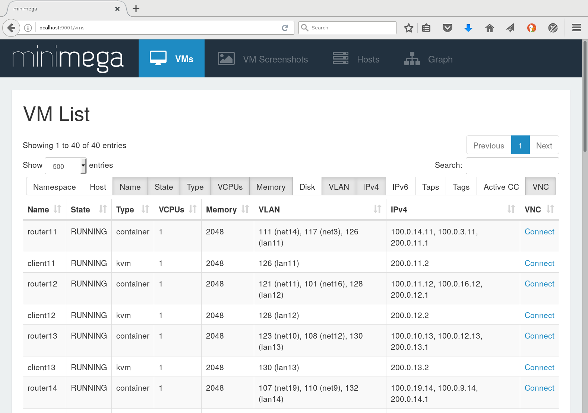
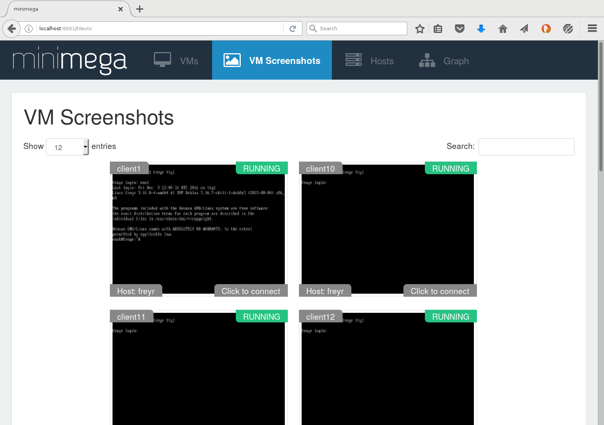
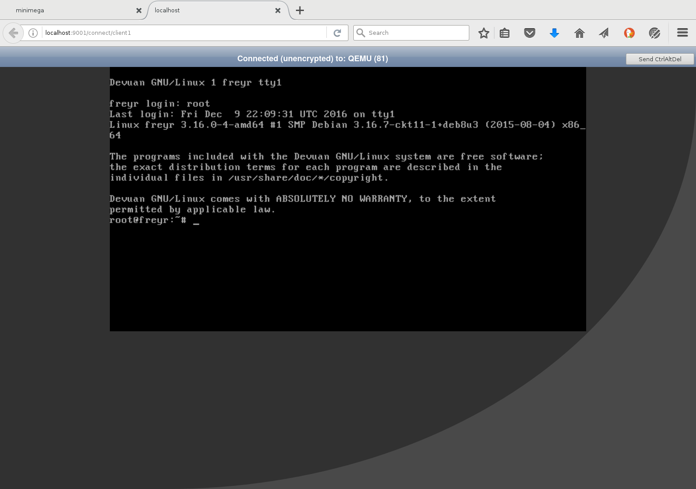
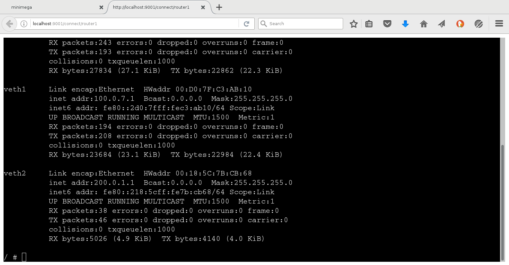
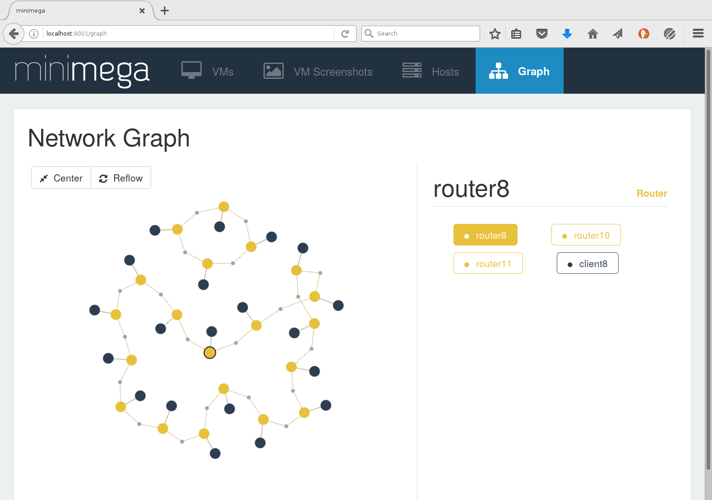

Although minimega is primarily controlled through the command line (or through scripts), it also provides a web interface that displays information on running VMs in a convenient format. These screenshots demonstrate some of the web capabilities.
The default view shows a table of running VMs. The user can select which fields should be displayed in the table. Each VM entry has a "Connect" link, which will take the user directly to the console of that particular VM as shown in later screenshots.
Clicking on the "VM Screenshots" tab at the top of the page will display a table of screenshots taken from the currently running VMs. This can be used to get an overview of the state of the experiment, or to visually choose a VM to connect to.
Virtual consoles are provided for both QEMU/KVM and container VMs. KVM VMs use an HTML5-based VNC client to connect to the KVM process:
Container VMs provide a Javascript text-only terminal:
The "Graph" tab provides a clickable visualization of the experiment's network and VM layout.
 {{ end }}